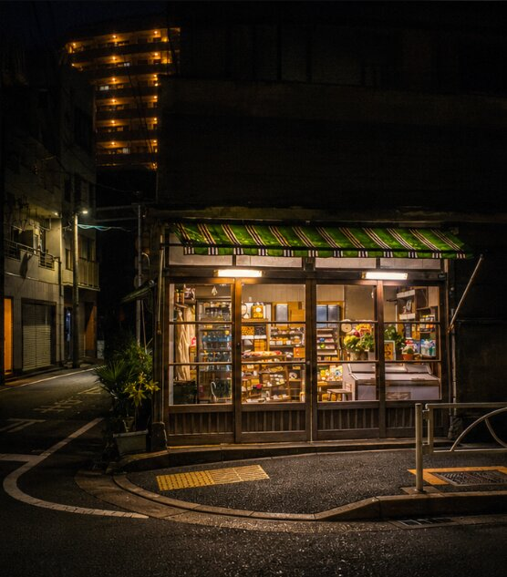
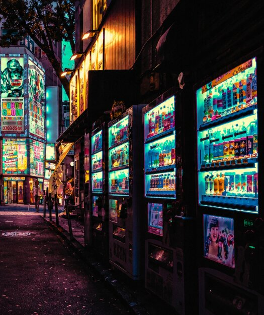
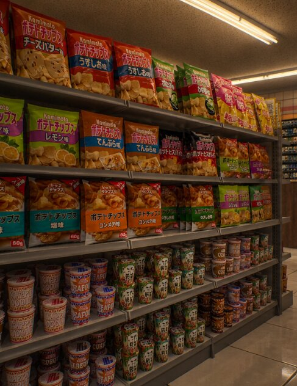

Where it began
Yorimichi began in 1998 as a tiny shop run by Mr. and Mrs. Aoki, who kept the lights on late so shift workers and students had somewhere warm to stop. One night turned into every night, and the shutters never came down again.
About us
寄り道: a little detour
--:--Setagaya, Tokyo · open now



Yorimichi began in 1998 as a tiny shop run by Mr. and Mrs. Aoki, who kept the lights on late so shift workers and students had somewhere warm to stop. One night turned into every night, and the shutters never came down again.
A good convenience store is a small kindness. A hot can of coffee, a pudding after a long day, a bowl of noodles at 2 AM. Nothing fancy, always there.
Yorimichi is the unplanned stop between where you were and where you are going. We hope that when you pass our window, you slow down, just a little.
One shop, four very different hours.
Office workers grab a rice ball and a hot tea on the way home.
Cram-school kids and night-shift nurses stop in for pudding and coffee.
Steam on the windows, rain on the street, and the quietest hour of the day.
Fresh bread arrives, the sky turns blue, and the lights stay on.
Every day, every hour. Holidays too.
3-12-7 Yorimichi-cho, Setagaya-ku, Tokyo 154-0000 (fictional)
Tel: 03-5555-0124
hello@yorimichi.example